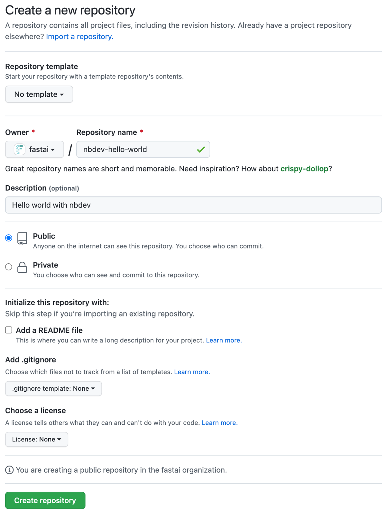
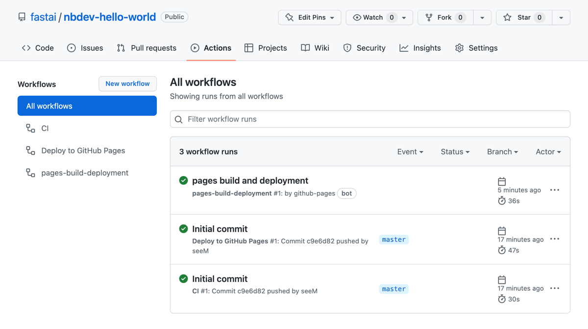
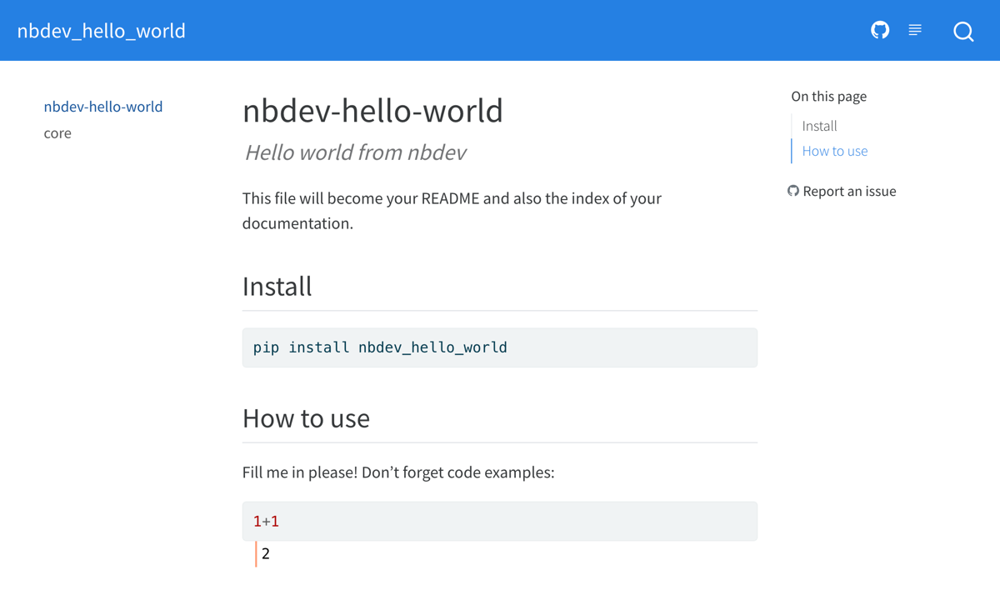
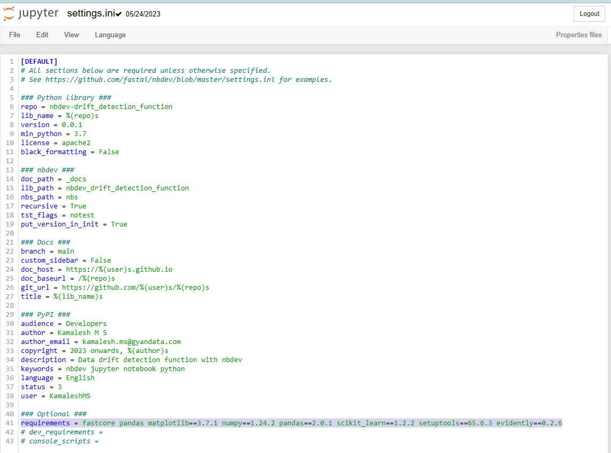
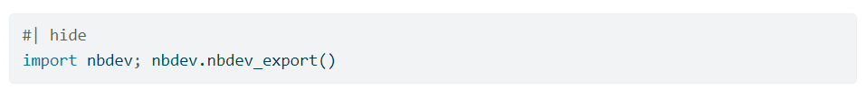

!conda install -c conda-forge -y jupyterlabGetting Started with nbdev: A Beginner’s Tutorial
Welcome to this tutorial on getting started with nbdev! In this tutorial, we will cover the basics of nbdev, a powerful tool for developing Python libraries in Jupyter notebooks. By the end of this tutorial, you’ll have a good understanding of how to create, test, document, and publish your Python library using nbdev.
Installation
To get started with nbdev, you need to install a few prerequisites. Follow these steps to install the required tools and libraries:
Install Python
- Install Python by visiting the official Python website: python.org.
A Python package manager: We recommend conda or pip
- Choose a Python package manager based on your preferences and requirements.
Install Jupyter Notebook
- Install Jupyter Notebook using the selected package manager:
- Code Cell (for conda):
- Code Cell (for pip):
!pip install jupyterlabLaunch Jupyter Notebook
Launch Jupyter Notebook by running the following command in a terminal or command prompt:
!jupyter labI have used
!or%in every code cells. But it is not necessary for you to use them if these commands are executed in your terminal and not from jupyter notebook.
- The exclamation mark (
!) before a command in Jupyter Notebook represents a “magic command.” Magic commands are special commands provided by IPython, the interactive Python kernel used by Jupyter Notebook.
- The exclamation mark is used to indicate that the command should be executed in a system shell or command-line interface, rather than within the Python kernel.
- When you prefix a line with
!in a code cell, Jupyter Notebook sends that line to the system shell for execution. It allows you to run system commands, install packages, execute shell scripts, and perform other shell-related operations directly from your notebook.
- For example, when you run
!pip install numpy, Jupyter Notebook executes the command pip install numpy in the system shell, installing the numpy package.
- Magic commands in Jupyter Notebook provide additional functionality and convenience for interacting with the underlying system and enhancing the notebook experience. They are called “magic” because they provide a special syntax and perform tasks beyond the standard Python execution.
There are two types of magic commands in Jupyter Notebook:
- Line magics: Line magics start with a single
%character and are used for a single line of execution.
- Cell magics: Cell magics start with
%%and are used for entire code cells.
- The exclamation mark (
!) is a shorthand notation for using line magics in Jupyter Notebook. It allows you to execute system shell commands conveniently within your notebook.
By using magic commands, you can seamlessly integrate system commands and Python code within your notebook, making it a versatile tool for interactive computing and data analysis.
Installation and Setup of nbdev, Quarto
Install nbdev
- To begin, We start by installing nbdev, which is a Python library that provides a framework for developing libraries and documentation using Jupyter notebooks.
!pip install nbdevSet up nbdev
- After installing nbdev, we need to set it up for our project. This involves creating the necessary folder structure and configuration files.
!nbdev_new
- After installing nbdev, we need to set it up for our project.
- The nbdev_new command creates the necessary folder structure and configuration files for nbdev. It sets up the project with the required directories, such as docs, nbs, tests, and your_project_name.
- Make sure to replace your_project_name with the desired name for your nbdev project.
Install Quarto
- Quarto is a powerful publishing system for creating scientific and technical documents from Jupyter notebooks. Let’s install it now.
!pip install quartoSet up Quarto with JupyterLab
- To use Quarto with JupyterLab, we need to install the JupyterLab extension for Quarto.
- This extension integrates Quarto into JupyterLab, allowing you to create and publish documents using Quarto’s features.
!quarto install --labCreate an Empty GitHub Repo
Before we start working on our nbdev project, we need to create an empty GitHub repository to hold our code and documentation. Follow these steps to create a new GitHub repository:
- Open the GitHub web interface in your browser and log in to your account.
- Click on the “+” icon in the top-right corner and select “New repository” from the dropdown menu.
- Enter a name for your repository and an optional description.
- Choose whether you want the repository to be public or private.
- Leave the “Initialize this repository with a README” option unchecked.
- Click the “Create repository” button to create the empty repository.
- If you still find it difficult, can refer github’s create new repo page.

Initialize Your Repo with nbdev
Now that we have created the GitHub repository, let’s initialize it with nbdev. Follow these steps to initialize your repository:
- Open a terminal or command prompt on your local machine.
- Navigate to the directory where you want to clone the GitHub repository.
- Run the following command to clone the repository:
# Run the following command to clone the repository:
!git clone <repository_url>This command creates a copy of the repository on your local machine. It will create a new directory with the same name as the repository and download all the files and commit history from the remote repository.
# Change to the directory of your cloned repository:This cell changes the working directory to the directory where you have cloned your repository. Replace
with the actual directory path.
# Initialize your repository with nbdev using the following command:
!nbdev_new <project_name>This cell initializes your repository with nbdev. Replace
with the desired name for your project. This command creates the necessary files and folder structure for your nbdev project.
- nbdev_new assumes that your package name is the same as your repo name (with - replaced by _). Use the –lib_name option if that isn’t the case.
- Double-check your settings.ini file to ensure that it has all of the correct information.

- Then commit and push your additions to GitHub:
!git add .
!git commit -m'Initial commit'
!git pushEnable GitHub Pages
To enable GitHub Pages for your repository, follow these steps:
- Go to your repository’s “Settings” tab.
- Scroll down to the “GitHub Pages” section.
- Under “Source”, select the “gh-pages” branch from the dropdown menu.
- Click the “Save” button.
- GitHub will build your pages and provide you with a URL where you can access your documentation.

Check Out Your Workflows
nbdev includes predefined workflows for continuous integration (CI) and deploying your documentation to GitHub Pages. The “CI” workflow runs tests and linters on your code whenever you push changes to your repository. The “Deploy to GitHub Pages” workflow builds and deploys your documentation to GitHub Pages.Let’s check out these workflows:
- Open the “Actions” tab in your repository on GitHub.
- You will see two workflows: “CI” and “Deploy to GitHub Pages”.

Check Out Your Docs
Once the “Deploy to GitHub Pages” workflow has completed successfully, you can check out your documentation:
- Wait for the “pages build and deployment” workflow to complete. You can monitor the progress in the “Actions” tab.
- Once the workflow is finished, open your website using the provided URL. This is the URL where your documentation is hosted. You should see your documentation website with the initial content generated by nbdev.


Set up Autoreload
Since you’ll be often updating your modules from one notebook, and using them in another, it’s helpful if your notebook automatically reads in the new modules as soon as the Python file changes. To make this happen, just add these lines to the top of your notebook:
Set up Prerequisites
If your module requires other modules as dependencies, you can add those prerequisites to your settings.ini in the requirements section. The requirements should be separated by a space and if the module requires at least or at most a specific version of the requirement this may be specified here, too.

Make Your First Edit
Now, let’s make our first edit to the documentation and see how it updates.
- Install nbdev’s hooks by running the following command in your terminal or command prompt:
# Run the following command to install nbdev's hooks:
!nbdev_install_hooksThe nbdev_install_hooks command is used to install nbdev’s Git hooks in your local repository. Git hooks are scripts that are automatically executed at specific points during the Git workflow.
- By installing nbdev’s Git hooks, you can automate certain checks and validations before committing or pushing changes to your repository. The pre-commit hook ensures that checks like linting, code formatting, and notebook validation are performed before a commit is made. This helps maintain code quality and ensures that your project adheres to certain standards.
!nbdev_build_libThis code cell builds the Python library from the Jupyter notebooks in your project. It converts the notebooks into Python modules and places them in the appropriate directory. It also generates an init.py file that allows you to import your library’s functions as modules.
# Use the nbdev_export command to create Python modules for your notebooks:
!nbdev_exportThis code cell runs the nbdev_export command, which creates Python modules for your notebooks. This command converts your notebook code cells into Python modules that can be imported and used by other users of your library.
# Install your package using pip:
!pip install -e '.[dev]'This code cell installs your package using the pip install -e command. The -e flag allows you to install the package in editable mode, which means any changes you make to the code will be immediately reflected without needing to reinstall.
!nbdev_build_docsThe nbdev_build_docs helps you ensure that your documentation is up to date with the latest changes in your notebooks. It allows you to review the documentation, make any necessary adjustments, and provide a good resource for users to refer to when working with your library or package.
# Start the preview of your docs using nbdev:
!nbdev_previewThis code cell starts the preview of your documentation using the nbdev_preview command. This command launches a local web server that allows you to preview your documentation in a web browser.
Edit 00_core.ipynb
Let’s now make an edit to the
00_core.ipynbnotebook, which is the main notebook of our library.
- Open the
00_core.ipynbfile in Jupyter Notebook.
- Update the notebook metadata and default export module according to your library’s needs.
- Save the notebook and rerun all cells to export the modules. Your changes will be reflected in the generated Python modules and documentation.
Add Your Own Function
Let’s add a new function to our library. Follow these steps:
- Add a new code cell in the
00_core.ipynbnotebook.
- Define your function in the code cell.
- Use the
#| exportdirective to specify that this function should be exported.
- Save the notebook and rerun all cells to update the modules. Your new function will be available in the generated Python modules and can be imported and used by other users of your library.
Add Examples, Tests, and Docs
It’s important to provide examples, tests, and documentation for your library. Follow these steps:
- Add regular code cells below your function’s code cell to provide examples of how to use the function.
- Add test cells using assertions or the
fastcore.testfunctions to test your function’s behavior.
- Include plots, images, or widgets in your examples if desired.
- Save the notebook and rerun all cells to update the modules and documentation. Your examples, tests, and documentation will be included in the generated Python modules and documentation.
def calculate_total_cost(item_price: float, # The price of a single item.
quantity: int, # The quantity of items.
discount: float = 0, # The discount rate as a decimal value. Defaults to 0.
tax_rate: float = 0, # The tax rate as a decimal value. Defaults to 0.
) -> float: # The total cost of the items, including any applicable discount and tax.
"""
Calculate the total cost of an item or items, taking into account the quantity, discount, and tax rate.
Raises:
ValueError: If item_price or quantity is negative.
"""
if item_price < 0 or quantity < 0:
raise ValueError("Item price and quantity must be non-negative.")
subtotal = item_price * quantity
total_discount = subtotal * discount
total_tax = subtotal * tax_rate
total_cost = subtotal - total_discount + total_tax
return total_costcalculate_total_cost
calculate_total_cost (item_price:float, quantity:int, discount:float=0, tax_rate:float=0)
Calculate the total cost of an item or items, taking into account the quantity, discount, and tax rate.
Raises: ValueError: If item_price or quantity is negative.
| Type | Default | Details | |
|---|---|---|---|
| item_price | float | The price of a single item. | |
| quantity | int | The quantity of items. | |
| discount | float | 0 | The discount rate as a decimal value. Defaults to 0. |
| tax_rate | float | 0 | The tax rate as a decimal value. Defaults to 0. |
| Returns | float | The total cost of the items, including any applicable discount and tax. |
# Example usage
item_price = 10.99
quantity = 5
discount = 0.1
tax_rate = 0.08
total_cost = calculate_total_cost(item_price, quantity, discount, tax_rate)
total_costPrepare Your Changes
Before committing your changes, it’s a good practice to run the
nbdev_preparecommand in the terminal or command prompt. This command performs several tasks to prepare your repository:
- Builds the
.pymodules from the notebooks.
- Runs tests on the notebooks.
- Cleans the notebooks.
- Updates the
README.mdfile with the contents of theindex.ipynbnotebook.
Run the following command to prepare your changes:
# Run the following command to prepare your changes:
!nbdev_prepareThis code cell runs the nbdev_prepare command in the terminal or command prompt. This command performs several actions, including building the .py modules, testing the notebooks, cleaning the notebooks, and updating the README.md file.
- The nbdev_prepare command performs a series of tasks to prepare your nbdev project for a commit. It ensures that your project is in a clean and organized state before you push your changes to the remote repository. The nbdev_prepare command includes the following commands:
- nbdev_build_lib: This command converts the Jupyter notebooks in your project into Python modules. It creates .py files for each notebook and places them in the appropriate project directories. This step is crucial for making your code accessible as importable modules.
- nbdev_clean_nbs: This command removes unnecessary metadata from your Jupyter notebooks. It cleans up the notebooks by removing execution counts, cell outputs, and other metadata that is not relevant for code distribution or documentation. This step helps keep your notebooks clean and focused on the code and documentation content.
- nbdev_diff_nbs: This command compares the notebook code cells with the corresponding Python modules to detect any inconsistencies. It identifies any code changes in the notebooks that have not been reflected in the Python modules. This step helps ensure that your code is synchronized between the notebooks and the modules.
- nbdev_fix_merge: This command helps resolve merge conflicts that may arise when working with notebooks and modules in a collaborative environment. It applies the necessary fixes to merge conflicts, allowing you to reconcile changes from different branches or contributors.
- nbdev_install_git_hooks: This command installs Git hooks in your project repository. Git hooks are scripts that are executed at specific points in the Git workflow, such as before committing or before pushing. These hooks can perform actions like running tests, linting code, or checking for code formatting. Installing Git hooks helps automate these checks and ensures that code quality standards are maintained.
- By running the nbdev_prepare command, you ensure that your project is properly built, cleaned, and synchronized, and that it adheres to the necessary Git workflow and quality checks. It sets your project up for a successful commit and push to the remote repository.
# Commit your changes using Git:
!git add .
!git commit -m "Add my new function and examples"# Push your changes to GitHub:
!git push origin mainThis code cell performs the Git commands to commit and push your changes to the remote repository. It adds all the modified files (git add .), commits the changes with a message (git commit -m “Update documentation”), and pushes the changes to the main branch of the remote repository (git push origin main).
- After pushing your changes, three actions will be performed: deployment, CI, and GitHub Pages.
- If all three actions are successful, your commit is successful, and you can view your deployment at the provided URL.
- Common errors that could be encountered include the “No module found” error, which happens when a developer forgets to add dependencies in the settings.ini file. Make sure to double-check and update the settings.ini file with the required dependencies for your project. It’s highlighted in the settings.ini image above.

#| hideis a directive (like#| default_exp) which excludes a cell from both your exported module and docs
- nbdev_export is the command used to export your notebooks to Python modules.
Common Errors and their Solutions
Here are a few common errors that you may encounter while working on documentation using nbdev, along with their solutions:
- Import Errors: This error occurs when you try to import a module or function that is not properly defined or not present in the generated Python modules. It can happen if you forget to add the #| export directive to the code cell containing the function or if there is a typo in the import statement.
- Solution: Double-check that the code cell defining the function has the #| export directive. Also, verify that the import statement in the notebook or in other modules is correctly referencing the function from the generated Python modules.
- Build Failures: Sometimes, during the nbdev_build_lib step, you may encounter build failures due to syntax errors, unresolved dependencies, or incompatible code.
- Solution: Review the error message to identify the cause of the build failure. Check for syntax errors in your code, ensure that all required dependencies are specified in the settings.ini file, and resolve any compatibility issues. Once you fix the errors, run nbdev_build_lib again.
- Documentation Formatting Issues: If you encounter issues with the formatting of your generated documentation, such as incorrect rendering of Markdown cells, missing sections, or broken links, it could be due to incorrect formatting or missing metadata in the notebooks.
- Solution: Review your notebooks and ensure that the Markdown cells are properly formatted with appropriate headings, bullet points, and links. Verify that the notebook metadata, such as toc, title, and keywords, are correctly specified. Rerun the necessary cells or notebooks to regenerate the documentation with the correct formatting.
- Failure in Tests: If your tests fail during the nbdev_test_nbs step, it means that the code in your notebooks is not producing the expected output or behavior.
- Solution: Review the failed tests and the associated error messages to identify the cause of the failure. Check your code for logical errors, incorrect calculations, or missing assertions. Modify your code or test cases accordingly until the tests pass successfully.
- GitHub Action Workflow Errors: While working with GitHub Actions, you may encounter errors related to workflow setup, configuration, or dependency management.
- Solution: Review the workflow files (usually located in the .github/workflows directory) and ensure that the configurations are correct. Check for any typos, missing dependencies, or incorrect setup steps. Additionally, refer to the GitHub Actions documentation for troubleshooting guidance specific to your issue.
Remember that thorough testing, careful code review, and attention to detail can help you avoid many common errors. If you encounter any issues, don’t hesitate to refer to the nbdev documentation.